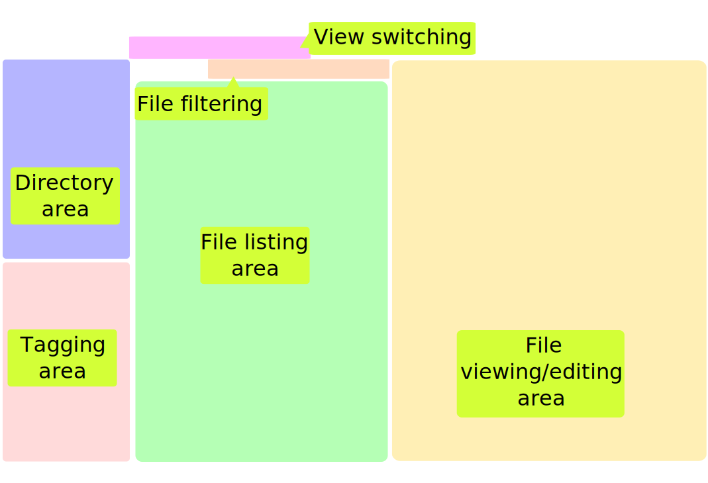
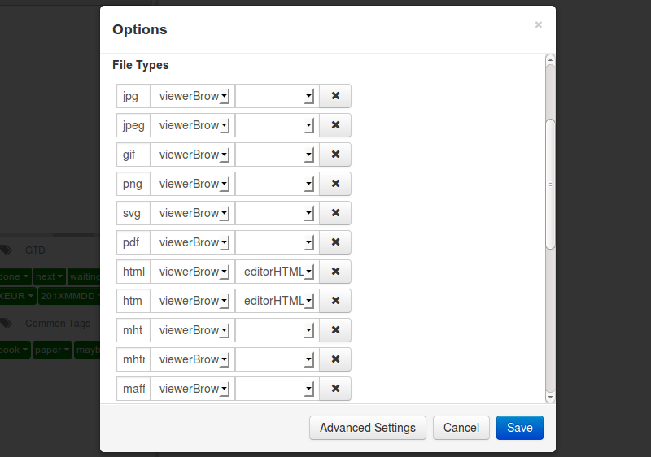
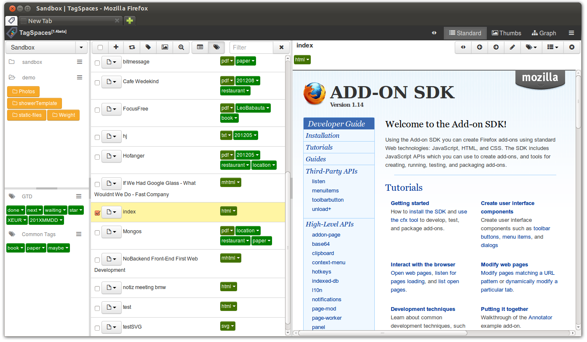
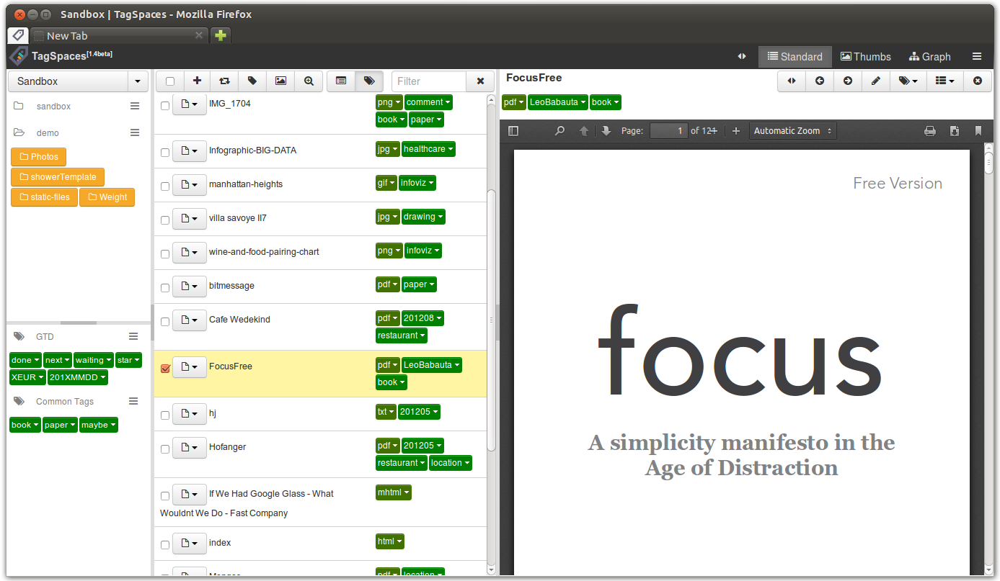
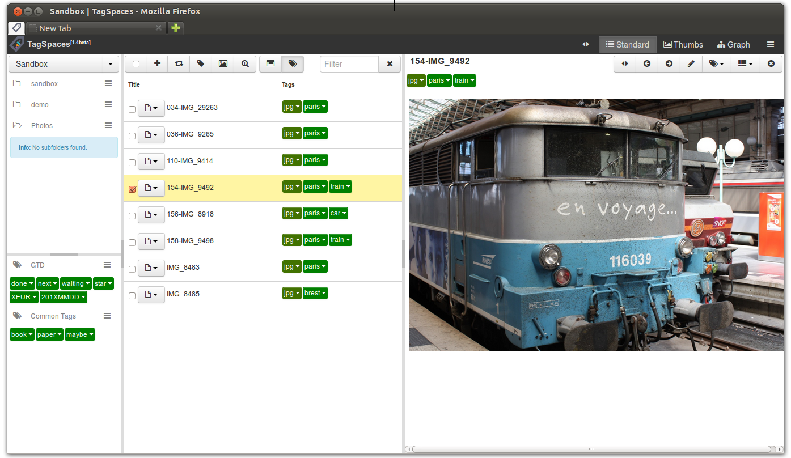
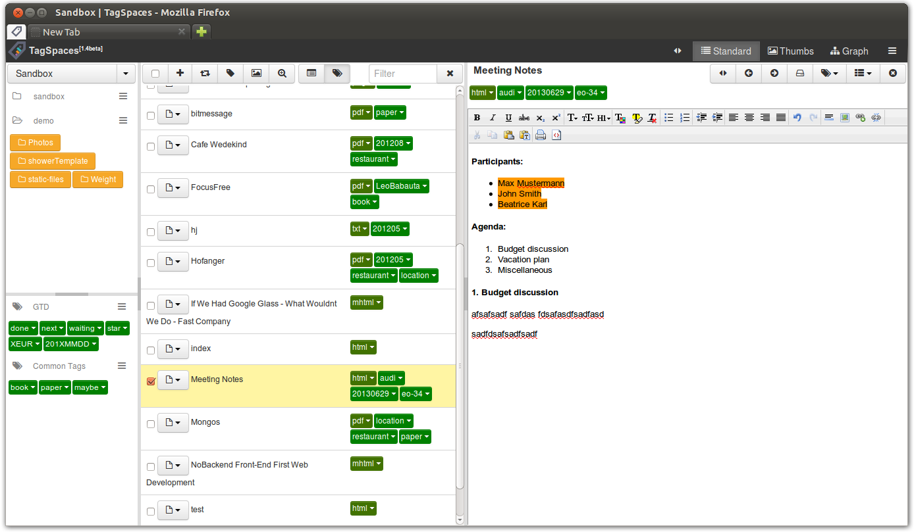
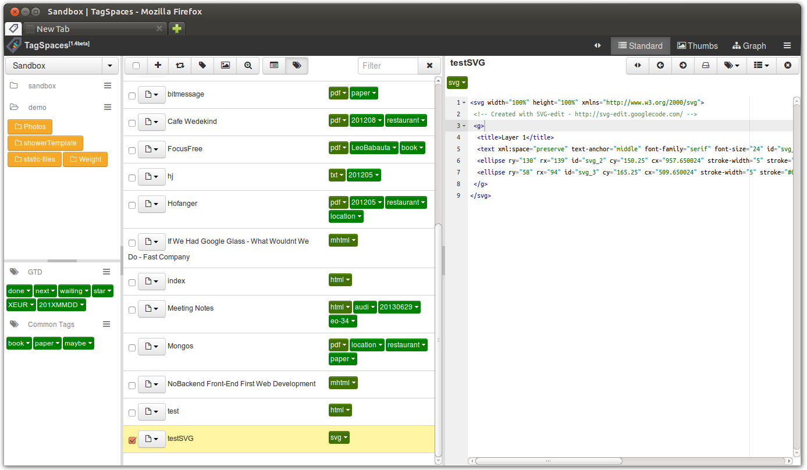
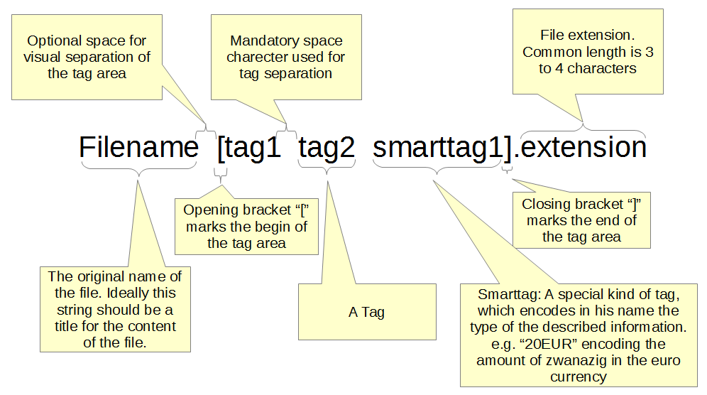
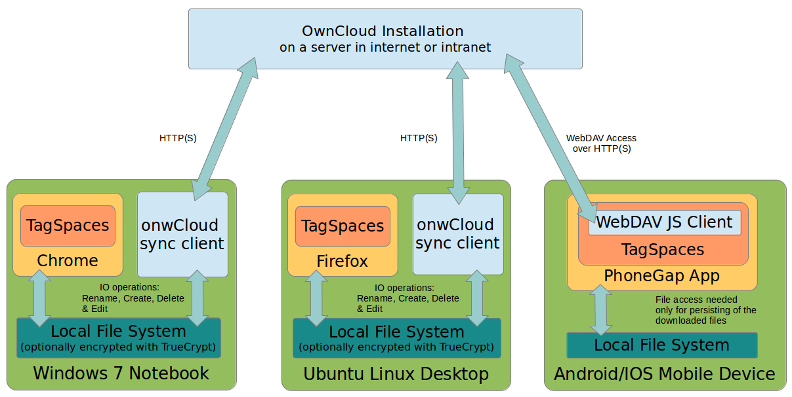

TagSpaces
Organize your data
Created by Ilian Sapundshiev / @ilianste
Overview
- TagSpaces is open source platform for personal data management
- Project start in August 2012
- Main software repository hosted on github: github.com/uggrock/tagspaces
- Official website: tagspaces.org
- Website of the firefox add-on: addons.mozilla.org/firefox/addon/tagspaces
Motivation
- In a world where more and more personal information is collected by mobile apps and owned by web platforms, TagSpaces gives you an alternative of owning your data and having it nicely organize and visualized with the manner of modern web technologies.
- TagSpaces is in brief an application which allows you to browse your local files in a web browser.
- One key feature of TagSpaces, is the support of file tagging.
TagSpaces is not
- a web portal or web application, so it has no server side. All the operations are done locally by the browser on the users desktop (or mobile device).
- dependent on Internet, so a pure offline use is absolutely possible.
- indexing you files in a database in order to save meta information. All describing data is saved in a form of tags. The tags are persisted directly in the name of the files, which increases the portability and the cross device use of the meta-data
Firefox Integration
Currently TagSpaces is implemented as Firefox add-on and runs on Windows, Linux and OSX

Integration in other plattforms
- TagSpaces is already almost completely ported to Chrome, yet some file system browsing issues are still available.
- A preview version can be downloaded from: tagspaces.org/downloads
- A version for android based tablets is also planned. The implementation will probably use phonegap.
- Running as a standalone application in e.g. app.js is also possible
Extensability???
- TagSpaces plattform is highly extensible
- The following extensions types are supported: viewers, editors & perspectives 
Extensions for file viewing (viewers)
The viewer allows you to open differenct types of files directly in TagSpaces. The default viewer allows you to open types which supported in browser such as JPG, PNG and HTML.
Viewing of a HTML file
Viewing of a PDF* file
*) firefox has meanwhile it's own integrated pdf viewer, which is used by tagspaces
Viewing of a JPEG/PNG/GIF/SVG
Viewing of MD (mard down) files

Viewing of a MHT* file
*) viewing of mht files in firefox is possible after installing of the ummht or maff extensions
Extensions for File Editing (editors)
- The intension of this extension type is to enable and encourage the editing of files directly in the browser, making it a universal editor.
- HTML editor is already implemented
- A text file editor utilizing the handy ACE* library is ongoing. This extension will allow editing of source code files in the browser
HTML Editor*
*) Based on the CLEditor library.
Text Editor*
*) Based on the ACE library.
Extensions visualizing the directory structure (perspektives)
- This kind of extension will be usefull for the visualization of a whole directory structures.
- Making finding some special kind of meta data and navigation very easy.
Standard Perspective
Thumbnail Perspective
Graph Perspective
Building Apps with TagSpaces
- With the combination of different perspectives, editors and viewers the creation of a more sophisticated application is possible
- Some usecase for using of tagspaces follow in the next slides
Filesystem as Database
- Every file is a data entry
- Every tag is a attribute of this entry
- Benefit is the easy cross device syncing with tools like owncloud or dropbox
Smarttags
- Can be used for:
- Sorting
- Building simple "Apps"
- ...
- Example
Organizing scrapped web content and notes like in Evernote
- Whole webpages can be saved in one mht file
- Parts of webpages can be pasted in html files created in TagSpaces
- These files can be tagged and organized in folder
- Advantages in comparison to EvernoteTM
- No limitations in the size of the scrapped content
- This content can be synced accross multiple devices with ownCloud
- You are in a complete control of your data
A local personal data manager, combining the strength of a wiki and mindmap
Organizing photos like in Picassa
Managing of todo lists
Tagging principles
Tagging is enabled for files only
- Due the fact the directory names should be kept short (file system limitations)
- This is the reason why directory tagging is currently not allowed
- Directory names could be used as tags suggestions for the files which they contain
Definition of a Tagspace
- Definition: Apps defined by tags ...
- Consists of:
- one or many taggroups
- location on a file system
- Includes logic for the visualization of the information encoded via tags
Technical Details
- TagSpaces user interface is based entirely on client side web technologies such as HTML5, JavaScript and CSS
- Extensions are dynamically loaded by requere.js
- The file system access is platform dependent
- In Firefox the Mozilla's add-on SDK is used
- In Chrome npapi library is utilized
- In Android the phonegap library is planned
Filename Anatomy
Syncing between devices
Syncing is not in the scope of TagSpaces. The following diagram proposes how tagged files can be synced across devices with the help of cloud services like owncloud or dropbox.
Credits
TagSpaces thankfully relays on the followings libraries:- jQuery - MIT and GPL2 licensed
- jQueryUI - MIT and GPL2 licensed
- jQuery Layout - MIT and GPL2 licensed
- jQuery Dropdown - MIT licensed
- jquery-in-place-editor - BSD licensed
- Bootstrap - Homepage License[Apache2]
- Font Awesome - Homepage License[SIL OFL 1.1]
- DataTables - Homepage License[BSD]
- JSONEditor - Homepage License[Apache2]
- RequireJS - Homepage License[MIT]
- Less - Homepage License[Apache2]
- vold-utils-jplib (firefox only)- Homepage License[MPL/MIT]
- menuitems-jplib (firefox only) - Homepage License[MIT/X11]
- toolbarbutton-jplib (firefox only) - Homepage License[MIT/X11]
- npapi-file-io (chrome only) - Homepage licensed New BSD